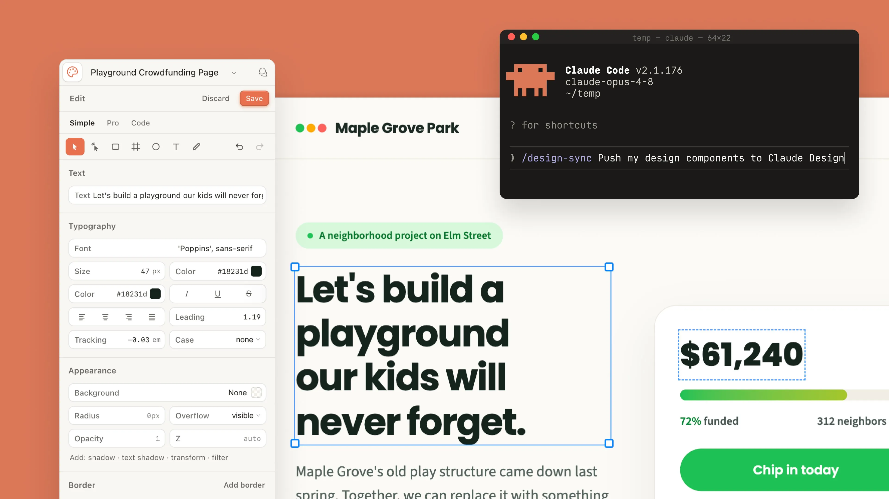

Claude Design이 업데이트되어, 이제 여러 프로젝트에 걸쳐 브랜드 일관성(brand consistency)을 유지하면서도 Claude Code와 매끄럽게 연동됩니다. 이번 업데이트로 캔버스(canvas)에서 직접 편집할 수 있는 기능, 더 많아진 도구 연결, 그리고 Claude 데스크톱 앱의 새로운 사이드바 위치가 추가되었습니다. claude.ai/design에서 사용할 수 있습니다.
Claude Design은 출시 첫 주에 100만 명이 넘는 사용자가 사용했으며, 사용자들의 피드백이 개발 우선순위를 적극적으로 다듬어 나가고 있습니다.

디자인 시스템 가져오기(design system import) 기능이 더 유연하고 정확하게 다시 설계되었습니다. 사용자는 GitHub 저장소, 디자인 파일, 또는 직접 업로드를 통해 디자인 시스템을 가져올 수 있습니다. Claude는 이 컴포넌트들을 사용해 디자인을 자동으로 구성하고, 화면에 표시하기 전에 결과물이 시스템 가이드라인에 부합하는지 검증합니다.
규모가 큰 팀을 위해서는, 표준 디자인 시스템을 정하고 수정을 제한할 수 있는 새로운 관리자(admin) 역할이 추가되었습니다. 이를 통해 모든 작업이 회사 브랜딩 요구사항에 맞도록 보장할 수 있습니다.
Claude Design과 Claude Code 사이의 연동이 한층 간결해졌으며, 업데이트는 즉시 적용됩니다. /design-sync 명령어를 사용하면 디자이너가 자신의 디자인 시스템을 가져올 수 있어, Claude Design 프로젝트를 기존 컴포넌트에서부터 시작할 수 있습니다.
디자인이 프로덕션에 투입할 준비가 되면, 사용자는 이를 Claude Code로 넘길 수 있습니다. 이때 Claude Code는 스크린샷에서부터 처음 다시 시작하는 대신, 기존 작업을 이어서 진행합니다.
Claude Code의 /design 명령어를 사용하면, 디자이너와 개발자가 터미널에서 직접 디자인 프로젝트를 생성하고, 편집하고, 동기화할 수 있습니다.
새로운 에디터(editor)는 디자인 요소를 세밀하고 직접적으로 제어할 수 있게 해 줍니다. 향상된 레이아웃 컨트롤(layout controls)을 통해 요소를 드래그하고, 크기를 조절하고, 정렬할 수 있습니다. 수백 가지의 안정성 개선이 실제 사용 환경의 요구를 뒷받침합니다.
Claude Design은 이제 채팅(chat), Claude Cowork, Claude Code와 사용량 한도(usage limits)를 공유하며, 이를 통해 대부분의 사용자에게 더 넉넉한 용량을 제공합니다. 또한 동일한 결과를 얻는 데 필요한 평균 턴(turn)당 토큰 수가 줄어들었고, 오류율(error rate)도 크게 낮아졌습니다.
디자인은 PDF와 PowerPoint로 내보내거나, 연동된 애플리케이션으로 전송할 수 있습니다. 현재 지원하는 커넥터(connector)로는 Adobe, Base44, Canva, Gamma, Lovable, Miro, Replit, Vercel, Wix가 있으며, 앞으로 더 많은 연동 대상이 추가될 예정입니다.

Replit (Michele Catasta, President & Head of AI): "Claude Design MCP 연동 덕분에 빌더들은 Claude Design에서 브랜드에 맞는 애플리케이션을 디자인하고, 이를 Replit에서 구축하고 다듬어 출시하는 과정을 하나의 매끄러운 워크플로우 안에서 처리할 수 있습니다."
Lovable (Fabian Hedin, 공동 창업자): "Claude Design과의 협력을 통해, 사람들은 해결책을 스케치하고 그 아이디어를 Lovable 안에서 프로덕션 수준의 애플리케이션으로 구현해낼 수 있습니다."
Gamma (Jon Noronha, 공동 창업자): "Claude Design을 Gamma에 연결하면 생성(generation)과 개인화(personalization) 사이의 간극이 사라집니다. 더 발전시킬 준비가 되면, 디자인이 완전히 편집 가능한 상태 그대로 Gamma로 바로 옮겨집니다."
Wix (Hagit Kauffman, 브랜드·디자인 부문 부사장): "Claude Design은 Wix Headless와 매끄럽게 연결되어, 디자이너에게 초기 스케치에서부터 완전히 동작하고 확장 가능한 제품까지 이르는 경로를 제공합니다."
Adobe (Govind Balakrishnan, Express 제품 그룹 SVP): "Adobe의 사명은 어디에서나 창작이 가능하도록 하는 것입니다. Adobe for creativity 커넥터를 통해 사용자는 Claude Design의 초안에서부터 Adobe Express의 완성된 작업물까지 아이디어를 발전시킬 수 있으며, 마케터는 Adobe Experience Manager를 통해 브랜드에 맞는 캠페인을 만들 수 있습니다."
Miro (Jeff Chow, 최고 제품·기술 책임자): "Claude Design과 연결한다는 것은, 아이디어가 일찌감치 Miro의 협업 캔버스 위에 도착해 팀의 다듬기와 정렬(alignment)을 위한 준비가 된다는 뜻입니다."
Vercel (Andrew Qu, Chief of Software): "디자이너와 개발자는 첫 콘셉트를 정교하고 브랜드에 맞는 인터페이스로 발전시킨 뒤, 곧바로 Vercel에 배포해 프로덕션으로 옮길 수 있습니다."
Canva (Cameron Adams, 공동 창업자 겸 CPO): "사용자는 Claude Design에서의 초기 프롬프트를 Canva 플랫폼 안에서 실제로 사용 가능한 작업물로 바꿉니다. 디자인은 여전히 깊이 인간 중심적이며, 아이디어에서 결과물로 나아가는 동안 개인화와 의도를 사람이 통제합니다."
Claude Design은 Claude Pro, Max, Team, Enterprise 플랜에서 베타로 제공됩니다. Enterprise 사용자의 경우 기본적으로 비활성화되어 있으며, 관리자가 조직 설정(organization settings)에서 활성화할 수 있고, 작업물은 조직 내부에서만 공유할 수 있습니다. claude.ai/design 또는 데스크톱 앱 사이드바를 통해 이용하세요.